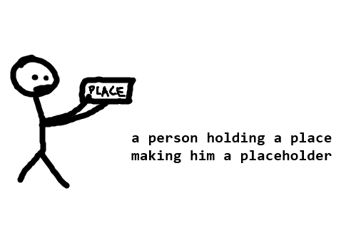

a way to easily download ANY version of placeholdername
How to download and play?
It's simple! (kind of)
and extract the downloaded file OR download a specific version HERE
Since i am using Processing 4.3 to create these kinds of games, it requires OpenJDK for them to work!
Minimum requirements:
i homestly dont know lmao
windows 7 or higher amd64 cpu
again you need openjdk
at least 10 mb of storage ig
How do I go in the real game tho?
oh boy this will get outdated real fast
Right now, the game is in early beta (v0.4.2) and there is STILL NO TITLE SCREEN FFS SAJDHAGSDHSDSHDS
go to "go to game" OR if you're feeling fancy go to "go to menu" and pick menu 2 (game) or 5 (transition to game)
What do the other options in the debug menu do?
one overwrites junk data to your leaderboard.dat file for testing.
some do nothing (for now)
one teleports you to different menus (technically the game is a menu)
one teleports you to the leaderboard which IS NOT DONE YET
ok i dont know what else to add here so here is placeholder.png
